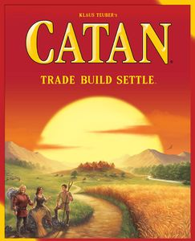

Catan
Catégories

Description rapide
Collectez et échangez des ressources pour construire l'île de Catane dans ce classique moderne.
Description
Dans CATAN (anciennement The Settlers of Catan), les joueurs essaient d'être la force dominante sur l'île de Catan en construisant des colonies, des villes et des routes. À chaque tour, les dés sont lancés pour déterminer les ressources produites par l'île. Les joueurs construisent en dépensant des ressources (mouton, blé, bois, brique et minerai) qui sont représentées par ces cartes de ressources ; chaque type de terre, à l'exception du désert improductif, produit une ressource spécifique : les collines produisent des briques, les forêts produisent du bois, les montagnes produisent du minerai, les champs produisent du blé et les pâturages produisent des moutons.
La configuration comprend le placement aléatoire de grandes tuiles hexagonales (chacune représentant une ressource ou le désert) en forme de nid d'abeilles et les entoure de tuiles d'eau, dont certaines contiennent des ports d'échange. Des disques de nombres, qui correspondront aux jets de dé (deux dés à 6 faces sont utilisés), sont placés sur chaque tuile ressource. Chaque joueur reçoit deux colonies (pensez : maisons) et routes (bâtons) qui sont, à leur tour, placées sur les intersections et les bordures des tuiles de ressources. Les joueurs collectent une main de cartes de ressources en fonction des tuiles hexagonales auxquelles leur dernière maison est adjacente. Un pion voleur est placé sur la tuile désert.
Un tour consiste éventuellement à jouer une carte de développement, à lancer les dés, tout le monde (peut-être) à collecter des cartes de ressources en fonction du résultat et de la position des maisons (ou des villes améliorées - pensez aux hôtels) à moins qu'un 7 ne soit obtenu, de rendre les cartes de ressources (si possible et souhaité) pour des améliorations, échanger des cartes dans un port et échanger des cartes de ressources avec d'autres joueurs. Si un 7 est obtenu, le joueur actif déplace le voleur vers une nouvelle tuile hexagonale et vole les cartes de ressources des autres joueurs qui ont construit des structures adjacentes à cette tuile.
Les points sont accumulés en construisant des colonies et des villes, en ayant la plus longue route et la plus grande armée (à partir de certaines des cartes de développement), et en rassemblant certaines cartes de développement qui attribuent simplement des points de victoire. Lorsqu'un joueur a accumulé 10 points (dont certains peuvent être tenus secrets), il annonce son total et réclame la victoire.